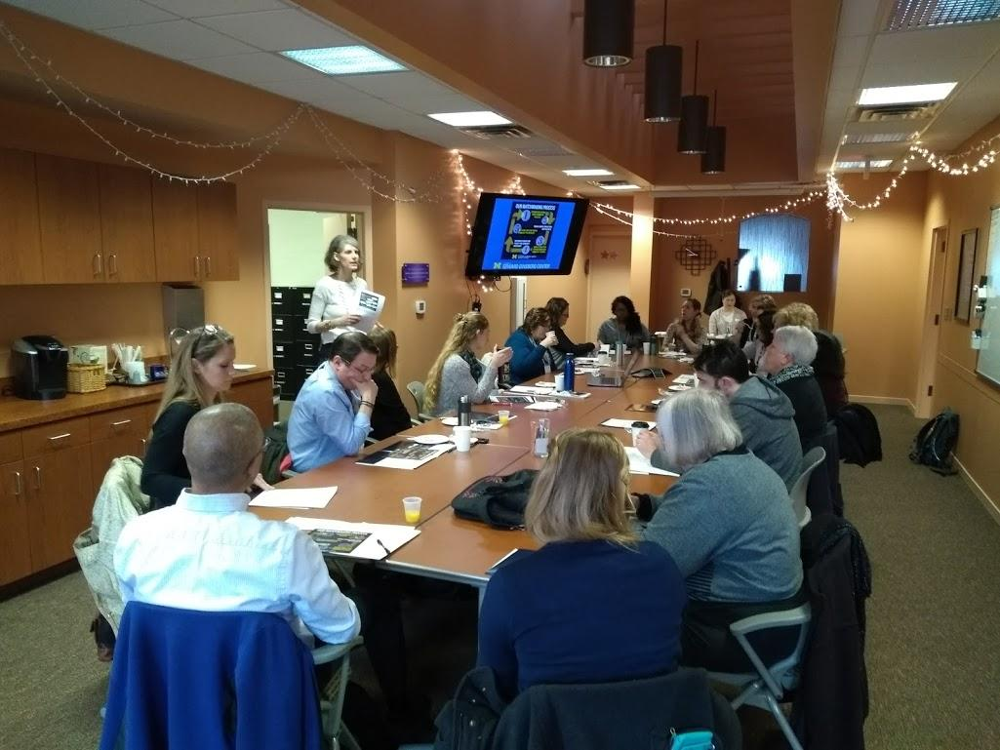
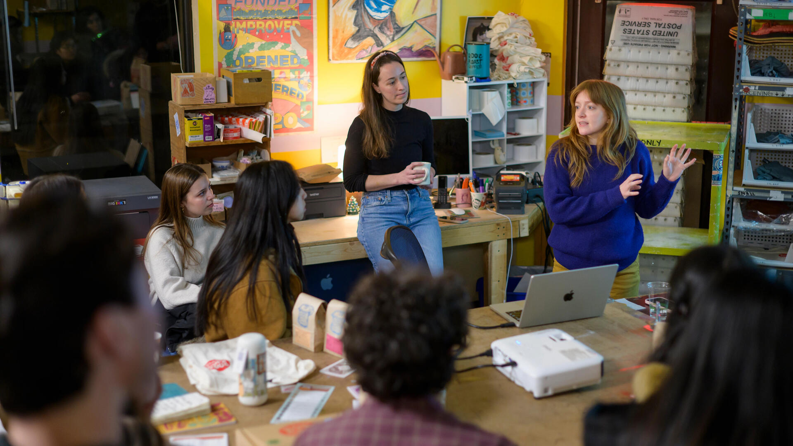

Your Toolkit for Every Stage
All of the templates, worksheets, and guides referenced throughout this site, gathered in one place for quick access — organized by the stage of your project. Questions along the way? Reach out to the Engaged Learning Office using the contact information below.

Preparing for Your Experience
Templates for reflecting on your positionality, assessing team readiness, and scoping the project before you begin. See Preparing for Your Experience for full guidance.
Starting the Experience
Templates for launching a professional partnership: first outreach, kickoff meetings, and formal agreements.

During Your Experience
Worksheets for fieldwork, user research, feedback management, and tracking sponsor communication while your project is active. See Starting Your Experience for full guidance.
- HFLI – AEIOU Worksheet: Framework to categorize field observations — Activities, Environments, Interactions, Objects, Users.
- HFLI User-Needs-Insights Worksheet: Translates raw interview and observation data into actionable design insights.
- HFLI Feedback Worksheet: Structures mid-point feedback cycles between students, instructors, and partners.
- Ginsberg Center – Community Engagement Cases Handout: Practical scenarios illustrating ethical dilemmas and resolution strategies.
- Sponsor Dashboard Template – Organizational Excellence: High-level status dashboard to keep external clients informed on project health.
- Student Project Communications Plan Example & Template: Establishes meeting cadences, channels, and response windows for teams.
- Project Management Worksheet: Hands-on tool for breaking down project goals into milestones and task assignments.
Wrapping Up & Next Steps
A project is not complete simply because the final deliverable has been handed over. These resources help you close responsibly, evaluate your outcomes, and translate your experience into resume, portfolio, and interview content.
Ending the Experience: Responsible Offboarding & Handoff
After the Experience: Career Integration & Portfolios